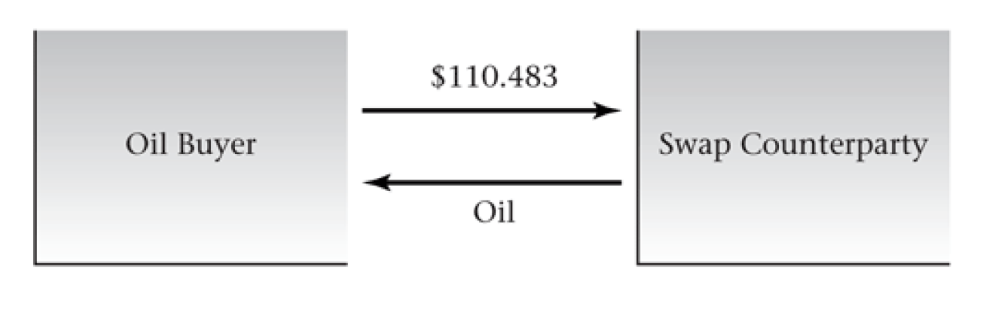

Week 6
Review of Forward & Futures
Cost of carry model (보유비용모형)
\[ F_0(T) = (S_0 + PV(\text{Cost of Carry}) - PV(Dividend)) \times (1 + r \times \frac{T}{365}) \]
Bond Futures
\[ F_0(T) = (S_0 - PV(Interest)) \times (1 + r \times \frac{T}{365}) \]
Stock Futures
\[ F_0(T) = (S_0 - PV(Dividend)) \times (1 + r \times \frac{T}{365}) \]
Currency Futures
\[ F_0(T) = S_0 \times (1 + (r_a - r_b) \times \frac{T}{365}) \]
Basic assumption
- 손상없이 무한정 보관 가정
- no arbitrage price
Contango, Backwardation
Contango - near-term futures price < far-term futures price
Backwardation - near-term futures price > far-term futures price
Introduction to Swaps
A swap is a contract calling for an exchange of payments, on one or more dates, determined by the difference in two prices.
A swap provides a means to hedge a stream of risky payments.
A single-payment swap is the same thing. as a cash-settled forward contract.
An example of a commodity swap
An industrial producer, IP Inc., needs to buy 100,000 barrels of oil 1 year from today and 2 years from today.
The forward prices for deliver in 1 year and 2 years and $110 and $111/barrel.
The 1- and 2-year zero-coupon bond yields are 6% and 6.5%.
IP can guarantee the cost of buying oil for the next 2 years by entering into long forward contracts for 100,000 barrels in each of the next 2 years. The PV of this cost per barrel is
\[ \frac{\$110}{1.06} + \frac{\$111}{1.065^2} = \$ 201.638 \]
Thus, IP could pay an oil supplier $201.638, and the supplier would commit to delivering one barrel in each of the next two years.
A prepaid swap is a single payment today to obtain multiple deliveries in the future.
With a prepaid swap, the buyer might worry about the resulting credit risk. Therefore, a more attractive solution is to defer payment until the oil is delivered, while still fixing the total price.
Any payments that have a present value of $201.638 are acceptable. Typically, a swap will call for equal payments in each year.
- For example, the payment per year per barrel, x, will have to be $110.483 to satisfy the following equation.
\[ \frac{x}{1.06} + \frac{x}{1.065^2} = \$201.638 \]
We then say that the 2-year swap price is $110,483
Physical settlement

Financial settlement
The oil buyer, IP, pays the swap counterparty the difference between $110.483 and the spot price, and the oil buyer then buys oil at the spot price.
If the difference between $110.483 and the spot price is negative, then the swap counterparty pays the buyer.
Whatever the market price of oil, the net cost to the buyer is the swap price, $110.483.
\[ \text{spot price} - \text{swap price} - \text{spot price} = -\text{swap price} = \text{swap payment} - \text{spot purchase of oil} \]
Note that 100,000 is the notional amount of the swap, meaning that 100,000 barrels is used to determine the magnitude of the payments when the swap is settled financially.
The results for the buyer are the same whether the swap is settled physically or financially. In both cases, the nest cost to the oil buyer is $100.483.


Swaps are nothing more than forward contracts coupled with borrowing and lending money.
- consider the swap price of $100.483/barrel. Relative to the forward curve price of $110 in 1 year and $111 in 2 years, we are overpaying by $0.483 in the first year, and we are underpaying by $0.517 in the second year.
The swap counterparty
The swap counterparty is a dealer, who is, in effect, a broker between buyer and seller.
The fixed price paid by the buyer, usually, exceeds the fixed price received by the seller. This price difference is a bid-ask spread, and is the dealer’s fee.
The dealer bears the credit risk of both parties, but is not exposed to price risk.
The situation where the dealer matches the buyer and seller is called a back-to-back transaction or “matched book” transaction.

Alternatively, the dealer can serve as counterparty and hedge the transaction by entering into long forward or futures contracts.

Note that the net cash flow for the hedge dealer is a loan, where the dealer receives cash in year 1 and repays it in year 2.
Thus, the dealer also has interest rate exposure (which can be hedged by using Eurodollar contracts or forward rate agreements).
The market value of a swap
The market value of a swap is zero at interception.
Once the swap is struck, however, its market value will generally no longer be zero because
- the forward prices for oil and interest rates will change over time.
- Even if prices do not change, the market value of swaps can change over time due to the implicit borrowing and lending.
A buyer wishing to exit the swap could negotiate terms with the original counterparty to eliminate the swap obligation or enter into an offsetting swap with the counterparty offering the best price.
The market value of the swap is the difference in the PV of payments between the original and new swap rates.
Computing the swap rate
notation
Suppose there are n swap settlements, occurring on dates \(t_i, i = 1, ..., n\)
The forward prices on these dates are given by \(F_{0, t_i}\)
The price of a zero-coupon bond maturing on date \(t_i\) is \(P(0, t_i)\)
The fixed swap rate is R.
IF the buyer at time zero were to enter into forward contracts to purchase one unit on each of the n dates, the present value of payments would be the present value of the forward prices, which equals the price of the prepaid swap:
\[ \text{Prepaid swap} = \sum_{i = 1}^{n}{F_{0, t_i} P(0, t_i)} \]
We determine the fixed swap price, R, by requiring that the present value of the swap payments equal the value of the prepaid swap
\[ \sum_{i = 1}^{n}{RP(0, t_i)} = \sum_{i = 1}^{n}{F_{0, t_i} P(0, t_i)} \]
\[ R = \frac{\sum_{i = 1}^{n}{P(0, t_i) F_{0, t_i}}}{\sum_{i = 0}^{n}{P(0, t_i)}} \]
Where \(\sum_{i = 1}^{n}{P(0, t_i) F_{0, t_i}}\) is the present value of interest payments implied by the strip of forward rates, and \(\sum_{i = 0}^{n}{P(0, t_i)}\) is the present value of a $1 annuity.
We can rewrite equation to make it easier to interpret.
\[ R = \sum_{i = 1}^{n}{[\frac{P(0, t_i)}{\sum_{j = 1}^{n}{P(0, t_i)}}]}F_{0, t_i} \]
Thus, the fixed swap rate is as a weighted average of the implied forward rates, where zero-coupon bond prices are used to determine the weights.
Swaps with variable quantity and prices
A buyer with seasonally varying demand might enter into a swap, in which quantities vary over time.
Consider a swap in which the buyer pays \(RQ_{t_i}\), for \(Q_{t_i}\) units of the commodity. The present value of these fixed payments (fixed per unit of the commodity) must equal the prepaid swap price.
\[ \sum_{i = 1}^{n}{Q_t F_{0, t_i} P(0, t_i)} = \sum_{i = 1}^{n}{Q_{t_i}RP(0, t_i)} \]
Solving for R gives
\[ R = \frac{\sum_{i = 1}^{n}{Q_{t_i} P(0, t_i) F_{0, t_i}}}{\sum_{i = 1}^{n}{Q_{t_i} P(0, t_i)}} \]
It is also possibly for prices to be time-varying.
- For example, a gas buyer who needs gas for heating can enter into a swap, in which the summer price is fixed at a low value, and the winter price is then determined by the zero present value condition.
Interest rate swaps
Companies use interest rate swaps to modify their interest rate exposure.
The interest payments are based on the notional principle of the swap.
The life of the swap is the swap term or swap tenor.


The swap curve
A set of swap rates at different maturities is called the swap curve.
The swap curve should be consistent with the interest rate curve implied by the Eurodollar futures contract, which is used to hedge swaps.
Recall that the Eurodollar futures contract provides a set of 3-month forward LIBOR rates. In turn, zero-coupon bond prices can be constructed from implied forward rates. Therefore, we can use this information to compute swap rates.

3개월 물이라 관례적으로 91/90으로 보정
\[ 0.00144 = (100 - 99.432) / (4 \times 100) \times \frac{91}{90} \]
Why swap interest rates?
Interest rate swaps permit firms to separate credit risk and interest rate risk.
- By swapping its interest rate exposure, a firm can pay the short-term interest rate it desires, but the long-term bondholders will continue to bear most of the credit risk.
Currency swaps
A currency swap entails an exchange of payments in different currencies.
A currency swap is equivalent to borrowing in one currency and lending in another.
Swaptions
A swaption is an option to enter into a swap with specified terms. This contract will have a premium.
A swaption is analogous to an ordinary option, with the present value of the swap obligations (the price of the prepaid swap) as the underlying asset.
Swaptions can be American or European.
A payer swaption gives its holder the right, but not the obligation, to pay the fixed price and receive the floating price.
- The holder of a receiver swaption would exercise when the fixed swap price is above the strike.
A receive swaption gives its holder the right to pay the floating price and receive the fixed strike price.
- The holder of a receiver swaption would exercise when the fixed swap price is below the strike.
Total return swaps
A total return swap is a swap in which one party pays the realized total return (dividends plus capital gains) on a reference asset, and the other party pays a floating return such as LIBOR.
The two parties exchange only the difference between these rates.
The party paying the return on the reference asset is the total return payer.
Some uses of total return swaps are
- avoiding withholding taxes on foreign stocks.
- management of credit risk.
A default swap is a swap, in which the seller makes a payment to the buyer if the reference asset experiences a “credit event.”
- A default swap allows the buyer to eliminate bankruptcy risk, while retaining interest rate risk.
- The buyer pays a premium, usually amortized over a series of payments.
Summary
The swap formulas in different cases all take the same general form.
Let \(f_0(t_i)\) denote the forward price for the floating payment in the swap. Then the fixed swap payment is
\[ R = \frac{\sum_{i = 1}^{n}{P(0, t_i) f_0(t_i)}}{\sum_{i = 1}^{n}{P(0, t_i)}} \]

Assignment
연습문제 8-1, 8-2